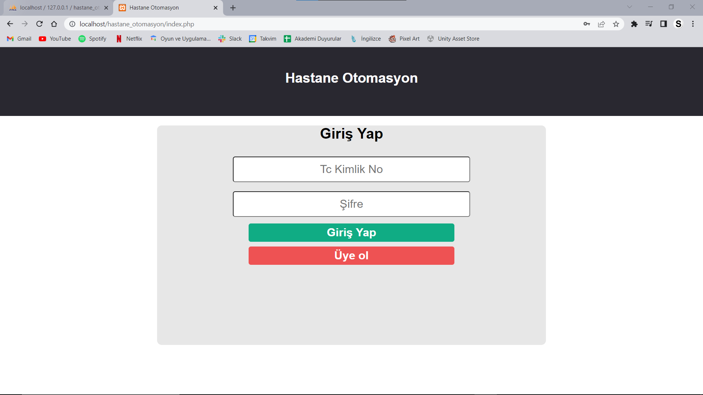
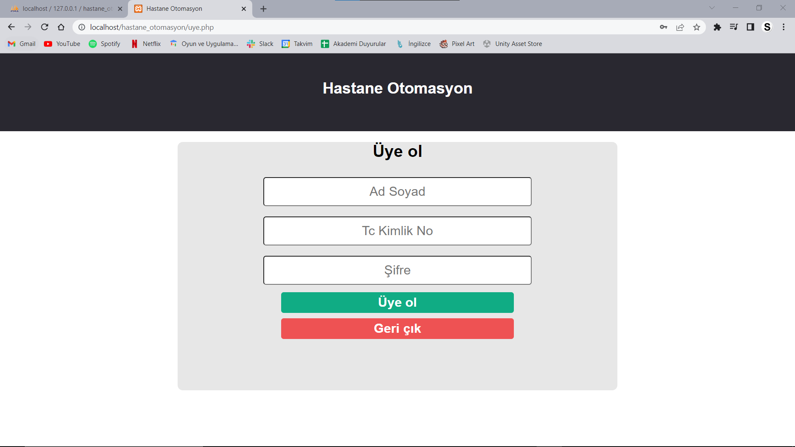
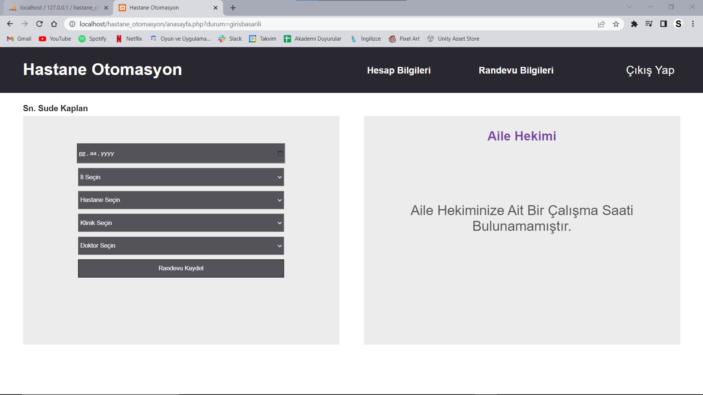
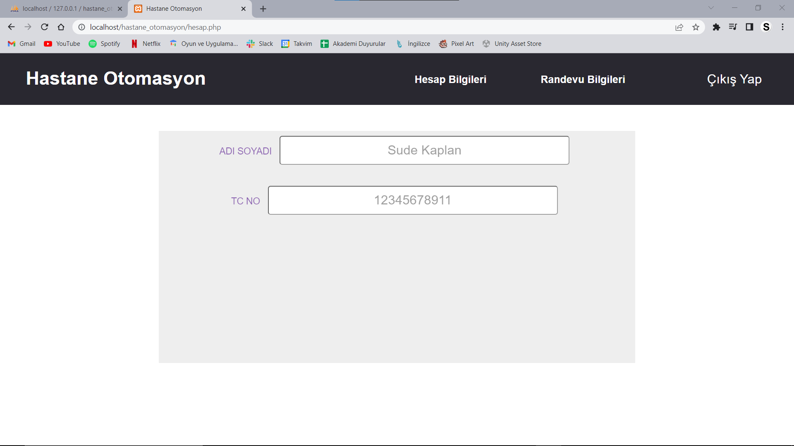
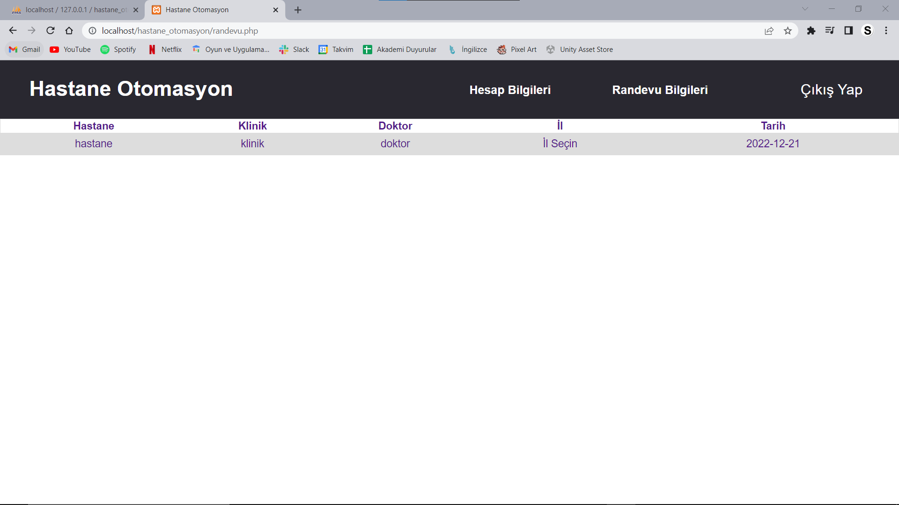
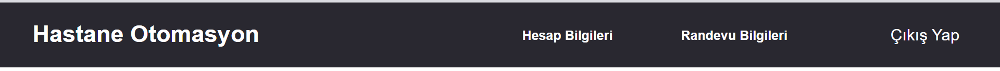
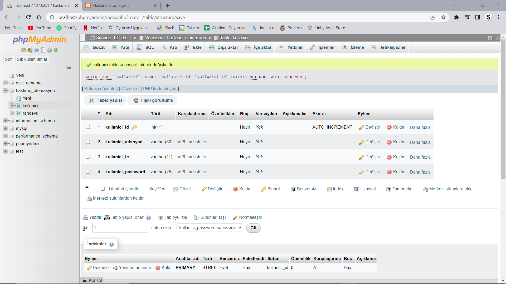
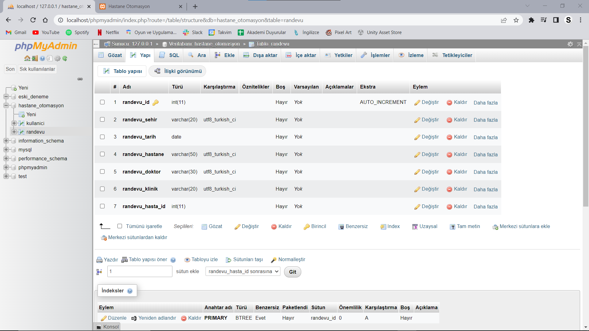
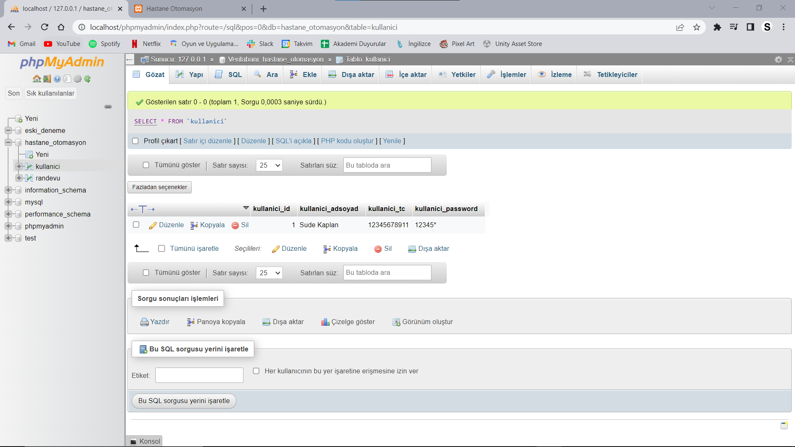
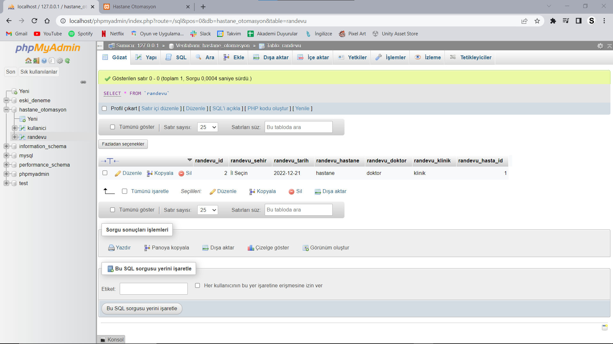

Kodlar Ne İçin Kullanıldı?
İndex.php
Buradaki kodlar bizim giriş yapmamızı ya da kayıt olmamızı sağlıyor. Aşadağıda bıraktığım kod satırları index.php dosyasına ait ve yorum satırları ise kodun kısaca açıklaması.
<!DOCTYPE html>
<html lang="tr">
<head>
<meta charset="UTF-8">
<meta name="viewport" content="width-device-width, initial-scale=1.0">
<link rel="stylesheet" href="stil.css"> //Classlara stil eklediğimiz, topluca kodların olduğu dosyaya yönlendirme.
<title>Hastane Otomasyon</title> //Sitenin üstteki pencere adı.
</head>
<body>
<header>
<h2>Hastane Otomasyon</h2> //Sayfanın üst başlığı.
</header>
//Giriş yap ve üye ol butonlarının bulunduğu sayfa.
<div class="tableouter">
<h1>Giriş Yap</h1>//Giriş yap sayfa başlığı.
<form action="islem.php" method="post"> //Bilgileri islem.php'ye gönder.
<div class="user">
<input type="text" name="kullanici_tc" placeholder="Tc Kimlik No"> //Tc kimlik numarası girdiğimiz kutucuğu oluşturma ve
görünür şekilde(text) kodlama.
</div>
<div class="pass">
<input type="password" name="kullanici_password" placeholder="Şifre"> //Şifre kutucuğu
oluşturma ve görünmez(password) şekilde kodlama.
</div>
<button type="submit" class="sub" id="giris" name="giris_yap">Giriş Yap</button> //Giriş yapma butonu
</form>
<a href="uye.php"><button type="submit" class="sub" id="uye">Üye ol</button></a> //Üye ol butonu.
İndex.php sayfasının görüntüsü
</div>
</body>
</html>

Uye.php
Buradaki kodlar bizim siteye üye olmamızı sağlıyor. Aşadağıda bıraktığım kod satırları uye.php dosyasına ait ve yorum satırları ise kodun kısaca açıklaması.
<!DOCTYPE html>
<html lang="tr">
<head>
<meta charset="UTF-8">
<meta name="viewport" content="width-device-width, initial-scale=1.0">
<link rel="stylesheet" href="stil.css">
<title>Hastane Otomasyon</title>
</head>
<body>
<header>
<h2>Hastane Otomasyon</h2>
</header>
<div class="tableouter">
<h1>Üye ol</h1>//Üye ol sayfa başlığı
<form action="islem.php" method="post">//Bilgileri islem.php'ye gönder.
<div class="user">
<input type="text" name="kullanici_adsoyad" placeholder="Ad Soyad">//Ad soyad girdiğimiz kutucuğu görünür(text)
olarak oluşturma
ve kutucuğun içine soluk tonda Ad Soyad yazdırma(placeholder).
</div>
<div class="user">
<input type="text" name="kullanici_tc" placeholder="Tc Kimlik No">//Tc kimlik numarası girdiğimiz kutucuğu görünür(text)
olarak oluşturma
ve kutucuğun içine soluk tonda Tc Kimlik No yazdırma(placeholder).
</div>
<div class="pass">
<input type="password" name="kullanici_password" placeholder="Şifre"> //Şifre girdiğimiz kutucuğu görünmez(password)
olarak oluşturma
ve kutucuğun içine soluk tonda Şifre yazdırma(placeholder).
</div>
<button type="submit" class="sub" id="giris" name="kullanicikaydet">Üye ol</button> //Üye ol butonu oluşturma.
</form>
<a href="index.php"><button type="submit" class="sub" id="uye">Geri çık</button></a> //Geri çık butonu oluşturma ve basınca index.php
sayfasına yönlendirme kodu.
</div>
</body>
</html>

Anasayfa.php
Buradaki kodlar sitemizin giriş yaptıktan sonraki ana sayfamızı oluşturuyor. Aşadağıda bıraktığım kod satırları anasayfa.php dosyasına ait ve yorum satırları ise kodun kısaca açıklaması.
<?php include 'header.php'; ?> //Header.php sayfasındaki kodları çek.
<!DOCTYPE html>
<html lang="tr">
<head>
<meta charset="UTF-8">
<meta name="viewport" content="width=device-width, initial-scale=1.0">
<link rel="stylesheet" href="stil.css">
<title>Hastane Otomasyon</title>
</head>
<body>
<div class="adsoyad">
<h4>Sn. <?php echo $kullanicicek['kullanici_adsoyad']; ?> </h4> //Veri tabanından giriş yapan kişinin
ad ve soyadını çek.(Örnek: Sn. Sude Kaplan)
</div>
<div class="orta_div" id="randevu_div">
<form action="islem.php" method="post">
<input type="date" name="tarih"> //Randevu almak için tarih seçilen kutucuk.
<select name="sehir" class="hastane"> //Randevu almak için seçilen şehir.
<option value="İl Seçin">İl Seçin</option>
<option value="Adana">Adana</option>
<option value="Adıyaman">Adıyaman</option>
<option value="Afyonkarahisar">Afyonkarahisar</option>
<option value="Ağrı">Ağrı</option>
<option value="Amasya">Amasya</option>
<option value="Ankara">Ankara</option>
<option value="Antalya">Antalya</option>
<option value="Artvin">Artvin</option>
<option value="Aydın">Aydın</option>
<option value="Balıkesir">Balıkesir</option>
<option value="Bilecik">Bilecik</option>
<option value="Bingöl">Bingöl</option>
<option value="Bitlis">Bitlis</option>
<option value="Bolu">Bolu</option>
<option value="Burdur">Burdur</option>
<option value="Bursa">Bursa</option>
<option value="Çanakkale">Çanakkale</option>
<option value="Çankırı">Çankırı</option>
<option value="Çorum">Çorum</option>
<option value="Denizli">Denizli</option>
<option value="Diyarbakır">Diyarbakır</option>
<option value="Edirne">Edirne</option>
<option value="Elazığ">Elazığ</option>
<option value="Erzincan">Erzincan</option>
<option value="Erzurum">Erzurum</option>
<option value="Eskişehir">Eskişehir</option>
<option value="Gaziantep">Gaziantep</option>
<option value="Giresun">Giresun</option>
<option value="Gümüşhane">Gümüşhane</option>
<option value="Hakkâri">Hakkâri</option>
<option value="Hatay">Hatay</option>
<option value="Isparta">Isparta</option>
<option value="Mersin">Mersin</option>
<option value="İstanbul">İstanbul</option>
<option value="İzmir">İzmir</option>
<option value="Kars">Kars</option>
<option value="Kastamonu">Kastamonu</option>
<option value="Kayseri">Kayseri</option>
<option value="Kırklareli">Kırklareli</option>
<option value="Kırşehir">Kırşehir</option>
<option value="Kocaeli">Kocaeli</option>
<option value="Konya">Konya</option>
<option value="Kütahya">Kütahya</option>
<option value="Malatya">Malatya</option>
<option value="Manisa">Manisa</option>
<option value="Kahramanmaraş">Kahramanmaraş</option>
<option value="Mardin">Mardin</option>
<option value="Muğla">Muğla</option>
<option value="Muş">Muş</option>
<option value="Nevşehir">Nevşehir</option>
<option value="Niğde">Niğde</option>
<option value="Ordu">Ordu</option>
<option value="Rize">Rize</option>
<option value="Sakarya">Sakarya</option>
<option value="Samsun">Samsun</option>
<option value="Siirt">Siirt</option>
<option value="Sinop">Sinop</option>
<option value="Sivas">Sivas</option>
<option value="Tekirdağ">Tekirdağ</option>
<option value="Tokat">Tokat</option>
<option value="Trabzon">Trabzon</option>
<option value="Tunceli">Tunceli</option>
<option value="Şanlıurfa">Şanlıurfa</option>
<option value="Uşak">Uşak</option>
<option value="Van">Van</option>
<option value="Yozgat">Yozgat</option>
<option value="Zonguldak">Zonguldak</option>
<option value="Aksaray">Aksaray</option>
<option value="Bayburt">Bayburt</option>
<option value="Karaman">Karaman</option>
<option value="Kırıkkale">Kırıkkale</option>
<option value="Batman">Batman</option>
<option value="Şırnak">Şırnak</option>
<option value="Bartın">Bartın</option>
<option value="Ardahan">Ardahan</option>
<option value="Iğdır">Iğdır</option>
<option value="Yalova">Yalova</option>
<option value="Karabük">Karabük</option>
<option value="Kilis">Kilis</option>
<option value="Osmaniye">Osmaniye</option>
<option value="Düzce">Düzce</option>
</select>
<select name="hastane" class="hastane">//Randevu almak için seçilen hastane(örnek program
olduğu için tüm hastaneler mevcut değil.)
<option value="hastane">Hastane Seçin</option>
<option value="Acıbadem Hastanesi">Acıbadem Hastanesi</option>
<option value="Bölge Egitim Ve Arastirma Hastanesi">Bölge Egitim Ve Arastarma Hastanesi</option>
<option value="Akdamar Hastanesi">Akdamar Hastanesi</option>
<option value="Hayat Hastanesi">Hayat Hastanesi</option>
</select>
<select name="klinik" class="klinik">//Randevu almak için seçilen klinik.
<option value="klinik">Klinik Seçin </option>
<option value="Dahiliye">Dahiliye</option>
<option value="Göz Hastalıkları">Göz Hastalıkları</option>
<option value="Kulak Burun Boğaz">Kulak Burun Boğaz</option>
<option value="Ortopedi">Ortopedi</option>
</select>
<select name="doktor" class="doktor">//Randevu almak için seçilen doktor.
<option value="doktor">Doktor Seçin</option>
<option value="Sude Kaplan">Sude Kaplan</option>
<option value="Mürüvvet Topsakal">Mürüvvet Topsakal</option>
<option value="Cemre Kalaycı">Cemre Kalaycı</option>
<option value="Şura Çakaloğlu">Şura Çakaloğlu</option>
</select>
<input type="hidden" name="kullanici_id" value="<?php echo $kullanicicek['kullanici_id']; ?>"> //Bizim bulunduğumuz
ekrana bilgi yazdırmadan(hidden) veritabanına kullanici_id ile birlikte bilgi gönderme.
<button name="randevu_kaydet">Randevu Kaydet</button> //Randevu kaydetme butonu.
</form>
</div>
<div class="orta_div" id="ailehekimi_div">
<h3>Aile Hekimi</h3>
<p>
Aile Hekiminize Ait Bir Çalışma Saati Bulunamamıştır.
</p>
</body>
</html>

Hesap.php
Buradaki kodlar sitemizin hesap bilgilerinin olduğu sayfayı oluşturuyor. Aşadağıda bıraktığım kod satırları hesap.php dosyasına ait ve yorum satırları ise kodun kısaca açıklaması.
<?php include 'header.php'; ?> //Header.php sayfasından kodları çek.
<!DOCTYPE html>
<html lang="tr">
<head>
<meta charset="UTF-8">
<meta name="viewport" content="width=device-width, initial-scale=1.0">
<title>Hastane Otomasyon</title>
</head>
<body>
<div class="hesabim_content">
<div clas="label">
<label>ADI SOYADI</label>//Etiket adı.
<input type="text" placeholder="<?php echo $kullanicicek['kullanici_adsoyad']; ?>">//Veri tabanından çekilen kullanıcı adı ve soyadı.
</div> <br>
<label>TC NO</label>//Etiket adı.
input type="text" placeholder="<?php echo $kullanicicek['kullanici_tc']; ?>">//Veri tabanından çekilen kullanıcı TC kimlik numarası.
</div>
</body>
</html>

Randevu.php
Buradaki kodlar sitemizin oluşturduğumuz randevu bilgilerinin olduğu sayfayı oluşturuyor. Aşadağıda bıraktığım kod satırları randevu.php dosyasına ait ve yorum satırları ise kodun kısaca açıklaması.
<?php include 'header.php'; ?>
<!DOCTYPE html>
<html lang="tr">
<head>
<meta charset="UTF-8">
<meta name="viewport" content="width=device-width, initial-scale=1.0">
<title>Hastane Otomasyon</title>
</head>
<body>
<table>//Tablo oluşturma(Sabit)
<tr>
<th>Hastane</th>
<th>Klinik</th>
<th>Doktor</th>
<th>İl</th>
<th>Tarih</th>
</tr>
<?php
//Veri tabanı sorgu kısmı.
$randevu_sor = $db->prepare("SELECT * FROM randevu
INNER JOIN kullanici ON randevu.randevu_hasta_id = kullanici.kullanici_id WHERE kullanici_tc=:kullanici_tc");
$randevu_sor->execute([
'kullanici_tc' => $_SESSION['userkullanici_tc']
]);
while ($randevu_cek = $randevu_sor->fetch(PDO::FETCH_ASSOC)) { ?>
<tr>//Kullanıcının girdiği bilgilere göre tablo oluşturma
<td><?php echo $randevu_cek['randevu_hastane']; ?></td>//Seçilen hastanenin listelenmesi
<td><?php echo $randevu_cek['randevu_klinik']; ?></td>//Seçilen klinik listelenmesi
<td><?php echo $randevu_cek['randevu_doktor']; ?></td>//Seçilen doktor listelenmesi
<td><?php echo $randevu_cek['randevu_sehir']; ?></td>//Seçilen sehir listelenmesi
<td><?php echo $randevu_cek['randevu_tarih']; ?></td>//Seçilen tarih listelenmesi
</tr> <?php } ?>
</table>
</body>
</html>

Header.php
Buradaki kodlar sitemizin üst başlığı ve diğer sekmelere bağlantılarını sağlar. Aşadağıda bıraktığım kod satırları header.php dosyasına ait ve yorum satırları ise kodun kısaca açıklaması.
<?php
ob_start();//ob_start ile içeriğin görüntülenmeye hazır olana kadar sunucu tarafında arabellekte tutmasını sağlıyor.
Headar sayfalarının olmazsa olmazıdır. Eksik olursa kod çalışmaz.
session_start();//Bu fonksiyon olmadan oturumu yönetemezsiniz.
include 'baglan.php';
//Veri tabanı sorgu kısmı.
$kullanicisor = $db->prepare("SELECT * FROM kullanici WHERE kullanici_tc=:kullanici_tc");
$kullanicisor->execute([
'kullanici_tc' => $_SESSION['userkullanici_tc']
]);
$say = $kullanicisor->rowCount();//Kullanıcı adı ve şifresiz link üzerinden değişiklikle anasayfa gibi sayfalara
yönlendirmeyi kısıtlıyor.
$kullanicicek = $kullanicisor->fetch(PDO::FETCH_ASSOC);
if ($say == 0) {
header("location:index.php?durum=izinsiz");
exit;
}
?>
<center>

</center>
<!DOCTYPE html>
<html lang="tr">
<head>
<meta charset="UTF-8">
<meta name="viewport" content="width=device-width, initial-scale=1.0">
<link rel="stylesheet" href="stil.css">
<title>Hastane Otomasyon</title>
</head>
<body>
<div class="ust_bar">
<a href="anasayfa.php">
<h1>Hastane Otomasyon</h1>
</a>
<div class="menu">
<a href="hesap.php">
<h5>Hesap Bilgileri</h5>//Headerda yazılı olan Hesap Bilgileri'ne tıklayınca
gidecek olan sayfayı kodluyoruz.
</a>
<a href="randevu.php">
<h5>Randevu Bilgileri</h5>//Headerda yazılı olan Randevu Bilgileri'ne tıklayınca
gidecek olan sayfayı kodluyoruz.
</a>
</div>
</div>
<a href="logout.php"><div class="cikis">//Çıkış yapma sayfasına yönlendirme.
Çıkış Yap
</div>
</body>
</html>
Logout.php
Buradaki kodlar çıkış yapmasını sağlıyor. Aşadağıda bıraktığım kod satırları logout.php dosyasına ait ve yorum satırları ise kodun kısaca açıklaması.
<?php
session_start();//Bu fonksiyon olmadan oturumu yönetemezsiniz.
session_destroy();//Geçerli oturumla ilişkilendirilmiş tüm veriyi yok eder.
header("location:index.php?exit")//Siteden çıkınca yönlendirilen sayfa.
?>
Baglan.php
Buradaki kodlar projeyle localhost ilişkilendirilmesini sağlar. Aşadağıda bıraktığım kod satırları baglan.php dosyasına ait ve yorum satırları ise kodun kısaca açıklaması.
//Hastane otomasyon projesi ile localhost bağlantısını root kullanıcı adıyla oluşturur. Şifreye gerek yoktur.
<?php
try {
$db = new PDO("mysql:host=localhost; dbname=hastane_otomasyon; charest=utf8", 'root', '');
} catch (Exception $e) {
echo $e->getMessage();
}
?>
Stil.css
Buradaki kodlar classların ekranda nasıl gözükmesini istediğimizi kodladığımız yer. Aşadağıda bıraktığım kod satırları stil.css dosyasına ait ve yorum satırları ise kodun kısaca açıklaması.
body {
padding: 0;//İç kenar boşluğu
margin: 0;//Dış kenar boşluğu
font-family: 'helvetica', sans-serif;//Metnin yazı tipi.
text-align: center;//Yazının konumu
background-color: #ffffff;//Arka plan rengi
}
header {
position: relative;
width: 100%;
left: 0;
background: #292830;
height: 150px;
top: 0;
}
header h2 {
position: absolute;
color: white;
left: 0;
right: 0;
margin: auto;
top: 50px;
font-size: 30px;
font-weight: bold;
}
.tableouter {
width: 850px;
height: 480px;
margin: 0 auto;
background: #e7e7e7;
border-radius: 10px;
}
input[type="text"],
input[type="password"] {
width: 60%;
margin: 10px;
height: 50px;
background: #ffffff;
border-radius: 5px;
text-align: center;
font-size: 25px;
color: gray;
}
::placeholder {
font: 25px;
text-align: center;
}
.sub {
width: 60x;
height: 40px;
border: none;
border-radius: 5px;
box-sizing: border-box;
font-size: 25px;
color: white;
font-weight: bolder;
cursor: pointer;//Bir eleman üzerine gelindiğinde imlecin değişmesi.
margin: 5px;
}
#giris {
background: #10ac84;
}
#uye {
background: #ee5253;
}
#giris:hover {
background: #1dd1a1;
}
#uye:hover { //butonun üzerine geldiğinizde buton renk değiştirir
background: #ff6b6b;
}
.ust_bar {
position: relative;
width: 85%;
height: 100px;
left: 0;
background: #292830;
top: 0;
}
.ust_bar h1 {
position: absolute;
left: 50px;
line-height: 50px;
color: white;
}
.menu h5 {
position: relative;
display: inline;
padding: 50px;
line-height: 100px;
font-size: 20px;
color: white;
text-decoration: none;
}
.menu {
position: absolute;
width: 600px;
height: 100px;
background: #292830;
right: 0;
}
.cikis {
position: absolute;
width: 15%;
height: 100px;
background: #292830;
right: 0;
color: white;
text-align: center;
line-height: 100px;
font-size: 25px;
cursor: pointer;
top: 0;
}
.cikis:hover {
background: red;
}
.adsoyad {
position: relative;
width: 300px;
height: 20px;
left: 50px;
}
.adsoyad h4 {
position: relative;
float: left;
color: #292830;
}
.orta_div {
position: absolute;
width: 45%;
height: 500px;
background: #e7e7e7;
top: 150px;
opacity: 0.8;
}
#randevu_div {
left: 50px;
}
#ailehekimi_div {
right: 50px;
}
#ailehekimi_div p {
position: relative;
color: #292830;
font-size: 30px;
text-align: center;
top: 100px;
}
#ailehekimi_div h3 {
text-align: center;
font-size: 28px;
}
select,
#randevu_div input,
button {
position: relative;
width: 450px;
height: 40px;
margin-top: 10px;
background: #292830;
color: white;
cursor: pointer;
}
#randevu_div form {
position: relative;
top: 50px;
}
.hesabim_content {
position: relative;
width: 60%;
height: 450px;
left: 20%;
top: 50px;
background: #e7e7e7;
opacity: 0.7; //Opaklık
}
label {
position: relative;
width: 100%;
height: 60px;
}
.label label {
position: relative;
font-size: 25px;
line-height: 60px;
left: 50px;
}
.label input {
position: relative;
float: right;
height: 40px;
}
table {
font-family: Arial, Helvetica, sans-serif;
border-collapse: collapse;
width: 100%;
}
td,
tr {
border: 1px solid #dddddd;
text-align: center;
padding: 8px;
}
tr:nth-child(even) {
background: #dddddd;
}
İslem.php
Buradaki kodlar sitemizin veri tabanıyla bağlantı kurarak işlemlerin ilerleyişini sağlar.. Aşadağıda bıraktığım kod satırları islem.php dosyasına ait ve yorum satırları ise kodun kısaca açıklaması.
<?php
ob_start();
session_start();
include 'baglan.php';
if (isset($_POST['kullanicikaydet'])) {
$kullanici_tc = isset($_POST['kullanici_tc']) ? $_POST['kullanici_tc'] : null;
$kullanici_adsoyad = isset($_POST['kullanici_adsoyad']) ? $_POST['kullanici_adsoyad'] : null;
$kullanici_password = isset($_POST['kullanici_password']) ? $_POST['kullanici_password'] : null;
//veritabanı ekleme işlemi
$sorgu = $db->prepare('INSERT INTO kullanici SET
kullanici_tc = ?,
kullanici_adsoyad = ?,
kullanici_password = ?
');
$ekle = $sorgu->execute([
$kullanici_tc,
$kullanici_adsoyad,
$kullanici_password
]);
if ($ekle) {
header('location:index.php?durum=basarili');
} else {
$hata = $sorgu->errorInfo();
echo 'mysql hatası' . $hata[2];
}
}
if (isset($_POST['giris_yap'])) {
$kullanici_tc = $_POST['kullanici_tc'];
$kullanici_password = $_POST['kullanici_password'];
$kullanicisor = $db->prepare("SELECT * FROM kullanici WHERE kullanici_tc=:kullanici_tc and kullanici_password=:kullanici_password");
$kullanicisor->execute([
'kullanici_tc' => $kullanici_tc,
'kullanici_password' => $kullanici_password
]);
$say = $kullanicisor->rowCount();
if ($say == 1) {
$_SESSION['userkullanici_tc'] = $kullanici_tc;
header('location:anasayfa.php?durum=girisbasarili');
exit;
} else {
header('location:index.php?durum=basarisizgiris');
exit;
}
}
if (isset($_POST['randevu_kaydet'])) {
$randevu_sehir = isset($_POST['sehir']) ? $_POST['sehir'] : null;
$randevu_hastane = isset($_POST['hastane']) ? $_POST['hastane'] : null;
$randevu_doktor = isset($_POST['doktor']) ? $_POST['doktor'] : null;
$randevu_tarih = isset($_POST['tarih']) ? $_POST['tarih'] : null;
$randevu_klinik = isset($_POST['klinik']) ? $_POST['klinik'] : null;
$hasta_id = isset($_POST['kullanici_id']) ? $_POST['kullanici_id'] : null;
$kaydet = $db->prepare("INSERT INTO randevu SET
randevu_sehir = ?,
randevu_hastane = ?,
randevu_doktor = ?,
randevu_tarih = ?,
randevu_klinik = ?,
randevu_hasta_id = ?
");
$insert = $kaydet->execute([
$randevu_sehir, $randevu_hastane, $randevu_doktor, $randevu_tarih, $randevu_klinik, $hasta_id
]);
if ($insert) {
header("location:anasayfa.php?kayit_basarili");
} else {
header("location:anasayfa.php?kayit_basarisiz");
}
}
?>
PhpMyAdmin
Bu sırada PhpMyAdminde oluşturduğumuz veri tabanı yukarıdaki kodlarla uyumlu olmalıdır.
Öncelikle PhpMyAdmin'e girerek yeni bir veri tabanı oluşturmamız gerekiyor. Bu veri tabanının adı Hastane Otomasyon olsun.

Yukarıda gördüğünüz görsel ise kodlarla uyumlu olarak sütunlar oluşturuldu ve türleri belirlendi(Varchar, int, date...) Görselde gördüğünüz Kullanıcı tablosudur.

Yukarıda gördüğünüz görsel ise randevu tablosudur. Her biri islem.php kod dosyasında kullanılmıştır. Kod dosyasıyla aynı adda olmasına özellikle özen gösterilmelidir.


Yukarıdaki görseller ise veri tabanının doğru çalıştığını gösteren fotoğraflardır. Projemin tek sorunu, anasayfada randevu alırken sadece tarih seçebilmemizdir.
Hastane, şehir, doktor gibi seçeneklerin çalışmıyor oluşu fakat kodlarda bulunuyor oluşudur. Aşağıda ise projemin çalışır halinin videosu bulunmaktadır. Keyifli seyirler.
Proje videosunu izlemek için tıklayın.